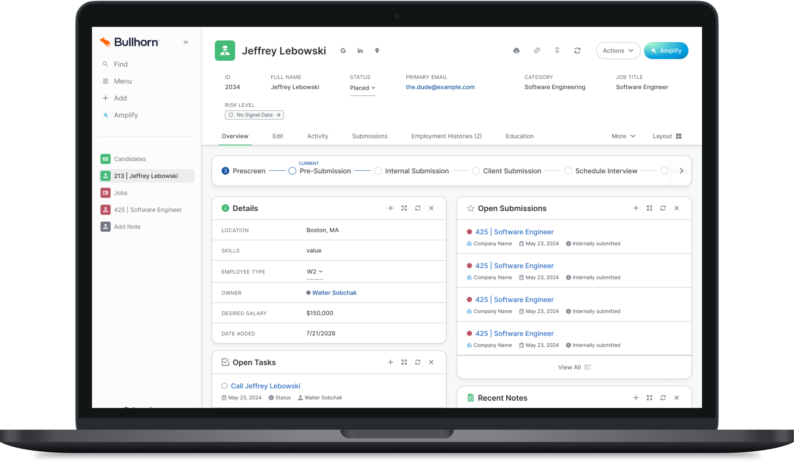

Bullhorn
A new look for Bullhorn's platform, built from the smallest pieces up.
Bullhorn brought me in for three months to update how its applicant tracking system looked, across the whole platform. The candidate record and the candidate list came first, because recruiters use them most. Once I saw how many components sat under those screens, I proposed a token system, got engineering behind it, and spent the rest of the contract building it.
- Focus
- Design tokens
- Component library
- Scope
- Full platform
- 500+ components
- Context
- Three-month contract
- Via Mondo